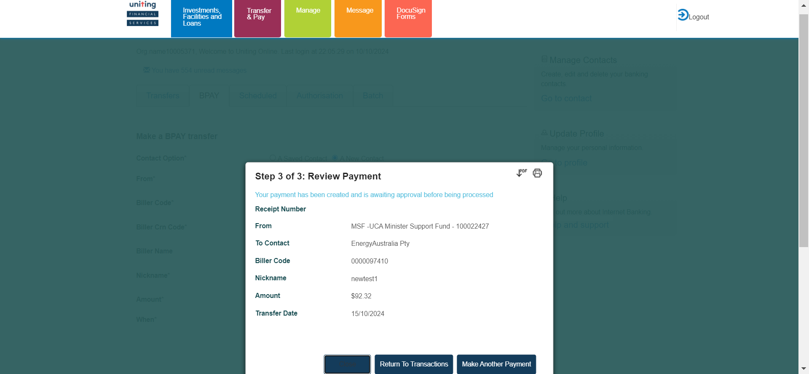
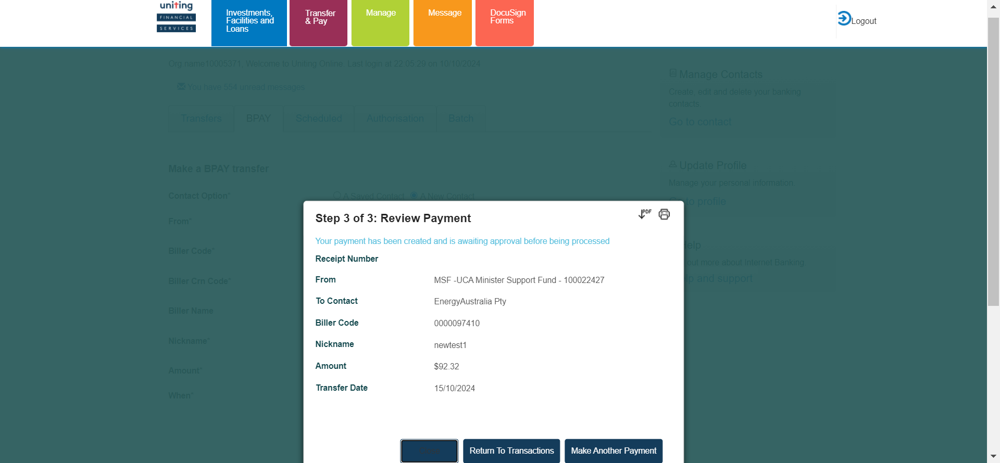
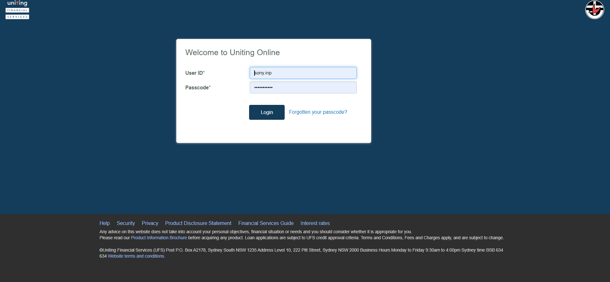
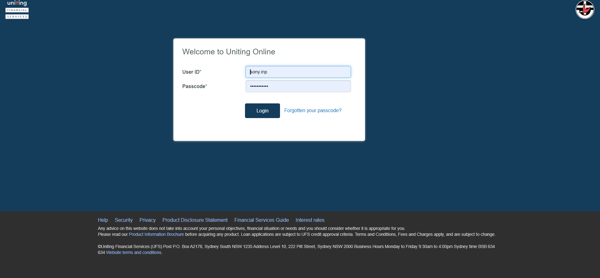

-
IBPayments
17:01:14 PM / 29:00:449 Fail
IBPayments
10.10.2024 17:01:14 10.11.2024 07:00:14 29:00:449 · #test-id=2FailBpay future new contactFailBpay future new contactWhen close all the other opened windows before loading the urlWhen User opens the IB URLcom.frameium.stepdef.Hooks.afterEveryStep(io.cucumber.java.Scenario) Given I login with username "298010" and password "Temenos@123" of IBStep skippedAnd click on Go to AccountsStep skippedAnd click on Transfers and Pay buttonStep skippedThen click on transfer buttonStep skippedThen Click on BpayStep skippedThen Enter the Bpay new contact future detailsStep skippedAnd confirm Bpay new contact future paymentStep skippedAnd Review the BPAY new contact futureStep skippedThen logout from IbStep skippedAnd Login to authorizer account with username "
Given I login with username "298010" and password "Temenos@123" of IBStep skippedAnd click on Go to AccountsStep skippedAnd click on Transfers and Pay buttonStep skippedThen click on transfer buttonStep skippedThen Click on BpayStep skippedThen Enter the Bpay new contact future detailsStep skippedAnd confirm Bpay new contact future paymentStep skippedAnd Review the BPAY new contact futureStep skippedThen logout from IbStep skippedAnd Login to authorizer account with username ""and password " " Step skippedAnd click on Go to AccountsStep skippedAnd click on Transfers and Pay buttonStep skippedThen click on Authorization buttonStep skippedThen Authorize the Bpay transfer new contact futureStep skippedThen Review authorization that the details of BPAY future is reflected correctlyStep skippedFailBpay future new contactWhen close all the other opened windows before loading the urlWhen User opens the IB URL Given I login with username "298010" and password "Temenos@123" of IB
Given I login with username "298010" and password "Temenos@123" of IB And click on Go to AccountsAnd click on Transfers and Pay buttonThen click on transfer buttonThen Click on BpayThen Enter the Bpay new contact future detailsAnd confirm Bpay new contact future paymentAnd Review the BPAY new contact future
And click on Go to AccountsAnd click on Transfers and Pay buttonThen click on transfer buttonThen Click on BpayThen Enter the Bpay new contact future detailsAnd confirm Bpay new contact future paymentAnd Review the BPAY new contact future com.frameium.stepdef.Hooks.afterEveryStep(io.cucumber.java.Scenario)Then logout from IbStep skippedAnd Login to authorizer account with username "
com.frameium.stepdef.Hooks.afterEveryStep(io.cucumber.java.Scenario)Then logout from IbStep skippedAnd Login to authorizer account with username ""and password " " Step skippedAnd click on Go to AccountsStep skippedAnd click on Transfers and Pay buttonStep skippedThen click on Authorization buttonStep skippedThen Authorize the Bpay transfer new contact futureStep skippedThen Review authorization that the details of BPAY future is reflected correctlyStep skippedFailAdding new contacts-BPAYFailAdding new contacts-BPAYWhen close all the other opened windows before loading the urlWhen User opens the IB URL Given I login with username "298010" and password "Temenos@123" of IB
Given I login with username "298010" and password "Temenos@123" of IB And click on Go to AccountsWhen Click on add contactWhen add the new contact details of Bpaycom.frameium.stepdef.Hooks.afterEveryStep(io.cucumber.java.Scenario)Then confirm whether the newly added BPAY details are correctStep skippedWhen edit the newly added BPAY contact detailsStep skippedWhen delete the newly added BPAY contactStep skippedFailAdding new contacts-BPAYWhen close all the other opened windows before loading the urlWhen User opens the IB URL
And click on Go to AccountsWhen Click on add contactWhen add the new contact details of Bpaycom.frameium.stepdef.Hooks.afterEveryStep(io.cucumber.java.Scenario)Then confirm whether the newly added BPAY details are correctStep skippedWhen edit the newly added BPAY contact detailsStep skippedWhen delete the newly added BPAY contactStep skippedFailAdding new contacts-BPAYWhen close all the other opened windows before loading the urlWhen User opens the IB URL Given I login with username "298010" and password "Temenos@123" of IB
Given I login with username "298010" and password "Temenos@123" of IB And click on Go to AccountsWhen Click on add contactWhen add the new contact details of Bpaycom.frameium.stepdef.Ufs.IBPayments.afterStep(io.cucumber.java.Scenario)com.frameium.stepdef.Hooks.afterEveryStep(io.cucumber.java.Scenario)Then confirm whether the newly added BPAY details are correctStep skippedWhen edit the newly added BPAY contact detailsStep skippedWhen delete the newly added BPAY contactStep skippedFaildebit batch paymentFaildebit batch paymentWhen close all the other opened windows before loading the urlcom.frameium.stepdef.Ufs.IBPayments.afterStep(io.cucumber.java.Scenario)com.frameium.stepdef.Hooks.afterEveryStep(io.cucumber.java.Scenario)When User opens the IB URLStep skippedGiven I login with username "298010" and password "Temenos@123" of IBStep skippedAnd click on Go to AccountsStep skippedAnd click on Transfers and Pay buttonStep skippedThen Click on BatchStep skippedAnd Enter the details of batchpayment fileStep skippedThen Review the batch payment templateStep skippedThen logout from IbStep skippedAnd Login to authorizer account with username "
And click on Go to AccountsWhen Click on add contactWhen add the new contact details of Bpaycom.frameium.stepdef.Ufs.IBPayments.afterStep(io.cucumber.java.Scenario)com.frameium.stepdef.Hooks.afterEveryStep(io.cucumber.java.Scenario)Then confirm whether the newly added BPAY details are correctStep skippedWhen edit the newly added BPAY contact detailsStep skippedWhen delete the newly added BPAY contactStep skippedFaildebit batch paymentFaildebit batch paymentWhen close all the other opened windows before loading the urlcom.frameium.stepdef.Ufs.IBPayments.afterStep(io.cucumber.java.Scenario)com.frameium.stepdef.Hooks.afterEveryStep(io.cucumber.java.Scenario)When User opens the IB URLStep skippedGiven I login with username "298010" and password "Temenos@123" of IBStep skippedAnd click on Go to AccountsStep skippedAnd click on Transfers and Pay buttonStep skippedThen Click on BatchStep skippedAnd Enter the details of batchpayment fileStep skippedThen Review the batch payment templateStep skippedThen logout from IbStep skippedAnd Login to authorizer account with username ""and password " " Step skippedAnd click on Go to AccountsStep skippedAnd click on Transfers and Pay buttonStep skippedThen click on Authorization buttonStep skippedAnd open the batch payment using file that need to be authorisedStep skippedThen authorise the batch paymentStep skippedThen review authorization that the details of debitbatchpaymentsfileStep skippedWhen User opens the T24 UrlStep skippedThen User should be able to login to T24Step skippedThen The user should be able to fill the commandlineStep skippedAnd The user should be able to click on general enquiries buttomStep skippedAnd click on the IB-view of account entriesStep skippedThen Enter the account number of debitbatchpaymentsfileStep skippedAnd click on find buttonStep skippedThen verify the narratives of debitbatchpaymentsfileStep skippedFaildebit batch paymentWhen close all the other opened windows before loading the urlcom.frameium.stepdef.Ufs.IBPayments.afterStep(io.cucumber.java.Scenario)com.frameium.stepdef.Hooks.afterEveryStep(io.cucumber.java.Scenario)When User opens the IB URLStep skippedGiven I login with username "298010" and password "Temenos@123" of IBStep skippedAnd click on Go to AccountsStep skippedAnd click on Transfers and Pay buttonStep skippedThen Click on BatchStep skippedAnd Enter the details of batchpayment fileStep skippedThen Review the batch payment templateStep skippedThen logout from IbStep skippedAnd Login to authorizer account with username ""and password " " Step skippedAnd click on Go to AccountsStep skippedAnd click on Transfers and Pay buttonStep skippedThen click on Authorization buttonStep skippedAnd open the batch payment using file that need to be authorisedStep skippedThen authorise the batch paymentStep skippedThen review authorization that the details of debitbatchpaymentsfileStep skippedWhen User opens the T24 UrlStep skippedThen User should be able to login to T24Step skippedThen The user should be able to fill the commandlineStep skippedAnd The user should be able to click on general enquiries buttomStep skippedAnd click on the IB-view of account entriesStep skippedThen Enter the account number of debitbatchpaymentsfileStep skippedAnd click on find buttonStep skippedThen verify the narratives of debitbatchpaymentsfileStep skippedFailcredit batch paymentFailcredit batch paymentWhen close all the other opened windows before loading the urlcom.frameium.stepdef.Ufs.IBPayments.afterStep(io.cucumber.java.Scenario)com.frameium.stepdef.Hooks.afterEveryStep(io.cucumber.java.Scenario)When User opens the IB URLStep skippedGiven I login with username "298010" and password "Temenos@123" of IBStep skippedAnd click on Go to AccountsStep skippedAnd click on Transfers and Pay buttonStep skippedThen Click on BatchStep skippedAnd Enter the details of Credit batchpayment fileStep skippedThen Review the batch payment templateStep skippedThen logout from IbStep skippedAnd Login to authorizer account with username ""and password " " Step skippedAnd click on Go to AccountsStep skippedAnd click on Transfers and Pay buttonStep skippedThen click on Authorization buttonStep skippedAnd open the batch payment that need to be authorisedStep skippedThen authorise the credit batch payment fileStep skippedThen review authorization that the details of creditbatchpaymentsfileStep skippedWhen User opens the T24 UrlStep skippedThen User should be able to login to T24Step skippedThen The user should be able to fill the commandlineStep skippedAnd The user should be able to click on general enquiries buttomStep skippedAnd click on the IB-view of account entriesStep skippedThen Enter the account number of creditbatchpaymentsfileStep skippedAnd click on find buttonStep skippedThen verify the narratives of creditbatchpaymentsfileStep skippedFailcredit batch paymentWhen close all the other opened windows before loading the urlcom.frameium.stepdef.Ufs.IBPayments.afterStep(io.cucumber.java.Scenario)com.frameium.stepdef.Hooks.afterEveryStep(io.cucumber.java.Scenario)When User opens the IB URLStep skippedGiven I login with username "298010" and password "Temenos@123" of IBStep skippedAnd click on Go to AccountsStep skippedAnd click on Transfers and Pay buttonStep skippedThen Click on BatchStep skippedAnd Enter the details of Credit batchpayment fileStep skippedThen Review the batch payment templateStep skippedThen logout from IbStep skippedAnd Login to authorizer account with username ""and password " " Step skippedAnd click on Go to AccountsStep skippedAnd click on Transfers and Pay buttonStep skippedThen click on Authorization buttonStep skippedAnd open the batch payment that need to be authorisedStep skippedThen authorise the credit batch payment fileStep skippedThen review authorization that the details of creditbatchpaymentsfileStep skippedWhen User opens the T24 UrlStep skippedThen User should be able to login to T24Step skippedThen The user should be able to fill the commandlineStep skippedAnd The user should be able to click on general enquiries buttomStep skippedAnd click on the IB-view of account entriesStep skippedThen Enter the account number of creditbatchpaymentsfileStep skippedAnd click on find buttonStep skippedThen verify the narratives of creditbatchpaymentsfileStep skipped
-
java.lang.NullPointerException
1 tests
java.lang.NullPointerException
1 failedStatus Timestamp TestName Fail 17:03:45 PM And Review the BPAY new contact future IBPayments.Bpay future new contact.And Review the BPAY new contact futureFail 17:06:01 PM When add the new contact details of Bpay IBPayments.Adding new contacts-BPAY.When add the new contact details of BpayFail 17:09:01 PM When add the new contact details of Bpay IBPayments.Adding new contacts-BPAY.When add the new contact details of Bpay -
org.openqa.selenium.WebDriverException
1 tests
org.openqa.selenium.WebDriverException
1 failedStatus Timestamp TestName Fail 17:01:31 PM When User opens the IB URL IBPayments.Bpay future new contact.When User opens the IB URLFail 17:11:52 PM com.frameium.stepdef.Ufs.IBPayments.afterStep(io.cucumber.java.Scenario) IBPayments.Adding new contacts-BPAY.com.frameium.stepdef.Ufs.IBPayments.afterStep(io.cucumber.java.Scenario)Fail 17:11:54 PM com.frameium.stepdef.Hooks.afterEveryStep(io.cucumber.java.Scenario) IBPayments.Adding new contacts-BPAY.com.frameium.stepdef.Hooks.afterEveryStep(io.cucumber.java.Scenario)Fail 20:12:05 PM When close all the other opened windows before loading the url IBPayments.debit batch payment.When close all the other opened windows before loading the urlFail 20:12:06 PM com.frameium.stepdef.Ufs.IBPayments.afterStep(io.cucumber.java.Scenario) IBPayments.debit batch payment.com.frameium.stepdef.Ufs.IBPayments.afterStep(io.cucumber.java.Scenario)Fail 20:12:06 PM com.frameium.stepdef.Hooks.afterEveryStep(io.cucumber.java.Scenario) IBPayments.debit batch payment.com.frameium.stepdef.Hooks.afterEveryStep(io.cucumber.java.Scenario)Fail 20:12:08 PM When close all the other opened windows before loading the url IBPayments.debit batch payment.When close all the other opened windows before loading the urlFail 20:12:09 PM com.frameium.stepdef.Ufs.IBPayments.afterStep(io.cucumber.java.Scenario) IBPayments.debit batch payment.com.frameium.stepdef.Ufs.IBPayments.afterStep(io.cucumber.java.Scenario)Fail 20:12:10 PM com.frameium.stepdef.Hooks.afterEveryStep(io.cucumber.java.Scenario) IBPayments.debit batch payment.com.frameium.stepdef.Hooks.afterEveryStep(io.cucumber.java.Scenario)Fail 06:59:56 AM When close all the other opened windows before loading the url IBPayments.credit batch payment.When close all the other opened windows before loading the urlFail 07:00:00 AM com.frameium.stepdef.Ufs.IBPayments.afterStep(io.cucumber.java.Scenario) IBPayments.credit batch payment.com.frameium.stepdef.Ufs.IBPayments.afterStep(io.cucumber.java.Scenario)Fail 07:00:06 AM com.frameium.stepdef.Hooks.afterEveryStep(io.cucumber.java.Scenario) IBPayments.credit batch payment.com.frameium.stepdef.Hooks.afterEveryStep(io.cucumber.java.Scenario)Fail 07:00:10 AM When close all the other opened windows before loading the url IBPayments.credit batch payment.When close all the other opened windows before loading the urlFail 07:00:13 AM com.frameium.stepdef.Ufs.IBPayments.afterStep(io.cucumber.java.Scenario) IBPayments.credit batch payment.com.frameium.stepdef.Ufs.IBPayments.afterStep(io.cucumber.java.Scenario)Fail 07:00:13 AM com.frameium.stepdef.Hooks.afterEveryStep(io.cucumber.java.Scenario) IBPayments.credit batch payment.com.frameium.stepdef.Hooks.afterEveryStep(io.cucumber.java.Scenario)
-
@firstday5
12 tests
@firstday5
12 failedStatus Timestamp TestName Fail 17:01:14 PM Bpay future new contact IBPayments.Bpay future new contactFail 17:01:14 PM Bpay future new contact IBPayments.Bpay future new contactFail 17:01:44 PM Bpay future new contact IBPayments.Bpay future new contactFail 17:04:21 PM Adding new contacts-BPAY IBPayments.Adding new contacts-BPAYFail 17:04:21 PM Adding new contacts-BPAY IBPayments.Adding new contacts-BPAYFail 17:08:10 PM Adding new contacts-BPAY IBPayments.Adding new contacts-BPAYFail 20:12:03 PM debit batch payment IBPayments.debit batch paymentFail 20:12:03 PM debit batch payment IBPayments.debit batch paymentFail 20:12:08 PM debit batch payment IBPayments.debit batch paymentFail 06:59:54 AM credit batch payment IBPayments.credit batch paymentFail 06:59:54 AM credit batch payment IBPayments.credit batch paymentFail 07:00:09 AM credit batch payment IBPayments.credit batch payment
Started
Oct 10, 2024 05:01:06 PM
Ended
Oct 11, 2024 07:00:15 AM
Features Passed
0
Features Failed
1
Features
Scenarios
Steps
Timeline
Tags
| Name | Passed | Failed | Skipped | Others | Passed % |
|---|---|---|---|---|---|
| @firstday5 | 0 | 12 | 0 | 0 | 0% |